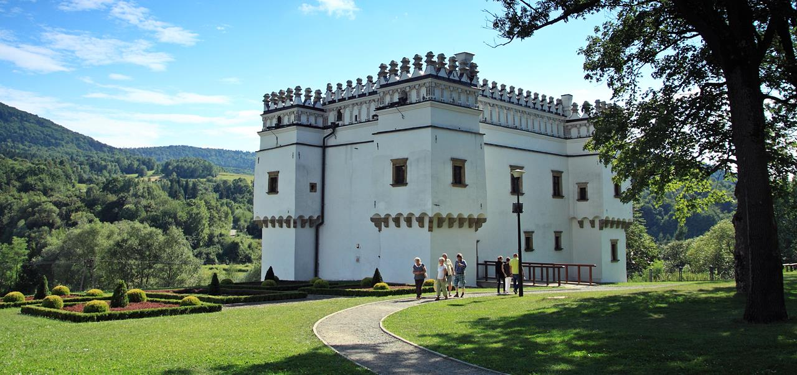

Kasztel w Szymbarku

Kasztel wzniesiono w XVI wieku nad rzeka Rop¹. Pocz¹tkowo by³ siedziba rodu G³adyszów herbu Gryf, którzy otrzymali okolice Szymbarku w 1359 roku od króla Kazimierza Wielkiego. Budowa kasztelu przebiega³a dwuetapowo, od oko³o 1530 roku a¿ do niemal 1600 r. Pierwszym etapem by³o powstanie bry³y budynku a drugim jego dokoñczenie i zdobienie.